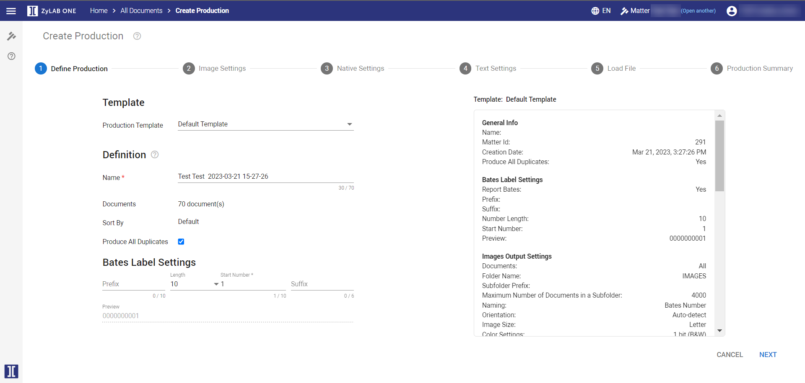
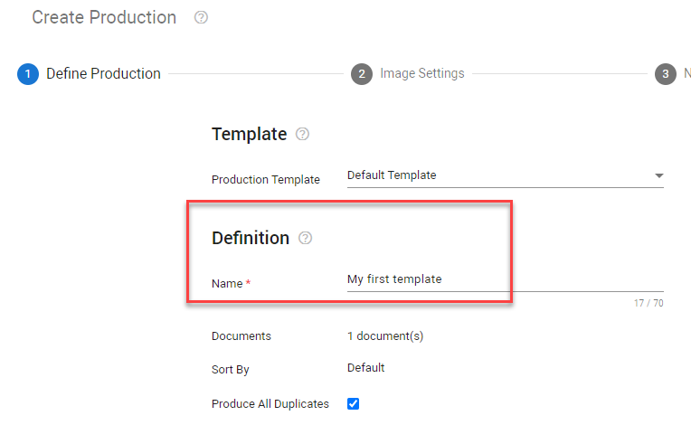
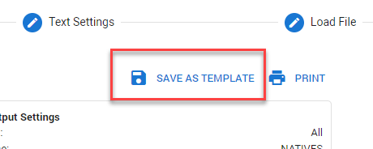
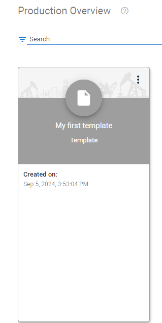
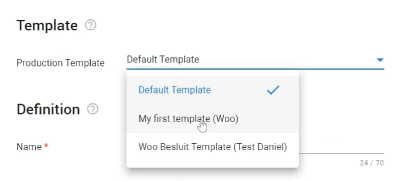

Then, select Productions > Create for Selection/Documents. For more information on starting a production, see Productions.
Step one of the production wizard. This is where you create a new production.
In the Document List, select the Settings icon
Then, select Productions > Create for Selection/Documents. For more information on starting a production, see Productions.

In the first step of the Production Wizard, under Production Template, you will see "Default Template". At this time, you can use the default settings or modify the default template for your production. Create, modify, delete and use production templates to export processed data from a matter.
You can modify the default template and create a unique production template that can be used across all matters provided that you have access to the matter that contains the template. Templates are stored within your matter.
Under Definition, name your production template.

Continue through the Production Wizard, selecting options as needed.
In the last step of the Production Wizard, you can save the modified (default) production template and use that template for productions in any case.
Click SAVE AS TEMPLATE.

You will see your new Production Template in the Production Overview screen. You can filter on the top left to view your templates in the matter.

The new template will now be available for selection when creating a production in all of your cases.

|
|
Note: All saved production templates will also be available when creating a batch download. |
Several legacy fields have been removed from the system. This means that in some cases the load files that are pre- defined require an update. The fields that have been removed are:
Original path
Creation date
Current datetime
Index longname
Index shortname
Original filesize
Last modification date of file
Last access date file of file
hash
OCR status
Define a production Name.
Number of Documents originates from Document List.
Sort By also originates from Document List.
Sort order was not adjusted in Document List.
Sort order was adjusted in Document List.
Define the unique identifying bates numbers that are assigned to each page of a produced document. These numbers provide proof that no pages were skipped during production. They can also be used for reference and retrieval.